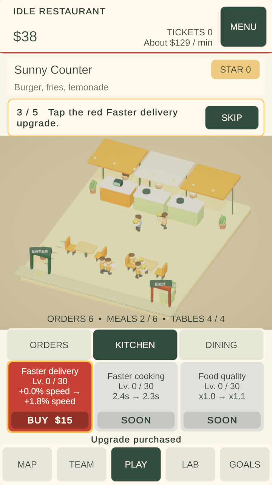
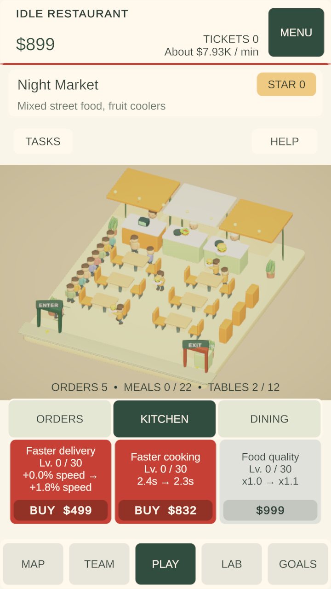

Guest flow and restaurant presentation
Requested on 5 November 2026. This implements the four follow-up observations from the Traffic Flow comparison. The original comparison remains a historical assessment of v0.3.0.
Mapping to the 16 prioritized improvements
| User observation | Original backlog coverage | Concrete implementation in this pass |
|---|---|---|
| Customer start/exit has no visual logic | Partially covered by #10 Food and animation and #11 Progression variety. Visible access points were not explicit enough; added as a specific acceptance condition. | Labeled entry and exit gateways align with the simulation endpoints. Guests enter the left queue, collect food, use a reserved chair, return their plate and leave through the right exit. Entry is limited to ten waiting guests so the queue remains inside its lane. The return bin is approached from the side with collider clearance. |
| A consistent UI/UX theme | #2 Navigation, #4 Map wrapping, #7 Visual hierarchy and #13 Accessibility. | Warm cream panels, dark herb text/navigation, tomato-red upgrade actions, grey unavailable cards and mustard guidance. Navigation now marks the current screen. Goals opens the goal list directly. Map descriptions use one concise line. |
| Tutorial popup dismisses and returns; yellow marking | Section 6 of the comparison and #8 Feedback. The exact transition pattern is a new explicit requirement. | Previous instruction fades out over 0.16s, remains hidden until 0.40s, then the next fades in over 0.20s. Yellow highlight follows the order upgrade, Kitchen tab, delivery upgrade, service status and Map. Reduced motion uses a static highlight and a short hidden interval. Guide text and help consistently refer to red affordable upgrades. |
| Red affordable / grey unaffordable buttons and a price bar | Affordability discussion under #7/#8. Red and the separate price strip are new user specifications, replacing the previous green convention. | Affordable guided/unlocked upgrade cards are tomato red with a darker BUY price strip. Insufficient-cash, tutorial-locked and max-level states are grey, with distinct price/SOON/MAX text. The price strip is part of the same touch target and cannot block clicks. |
Verification
Live Editor result: PASS — 14 checks. The rerun measured the first completed meal at 24.5 simulation seconds, first service at 41.5 seconds, and the 22-guest service at 79.0 seconds. The maximum waiting queue was ten. All 28 tested guests returned their plate and exited before their service reward. The original live state and original on-disk save/backup were restored.
Current live-game verification result records UI raycast purchases, affordability boundaries, tutorial hide/reappear timing, active navigation, all six opening guests, plate returns/exits and a busy 22-guest service. Screenshots below are from the actual running Unity game. Physical Android touch/performance requires a phone and is not inferred from Editor checks.


Android patch
Version 0.3.1 / code 4 built successfully, with zero errors and two existing warnings (unused refresh flag and legacy icon format). APK ZIP integrity, signature v2, version and absence of billing/advertising-ID permissions are verified. This is an Android debug-signed testing APK, not a publisher-signed store release. See artifact evidence.
Scope and editable implementation
Prices, payouts, upgrade formulas, research, teammates and star rules are unchanged. Walking geometry changes slightly, so service duration is measured again rather than claimed identical. The plate-return flag is serialized and defaults to false when older saves are loaded.
RestaurantPresentation.cs: central UI palette, separate upgrade price bars, tutorial transitions and highlights.RestaurantGuestAccess.cs: doorway/plate-return positions and visible access geometry. Shared endpoints keep visuals and paths aligned.RestaurantServiceView.cs: bounded guest entry and a return-bin/exit route that respects furniture colliders.RestaurantPresentationVerification.cs: repeatable live UI/guest verification; original live state is restored in a finally block.
The first route test detected a walking segment crossing the new return-bin collider. The bin and waypoints were corrected; the failed initial result is retained separately for traceability, and is not represented as a passing test.
The wider backlog remains open: estimator calibration, deeper district variation, food/readability improvements, richer rewards/audio, full team effects, long-term pacing and physical-device release validation are separate work.